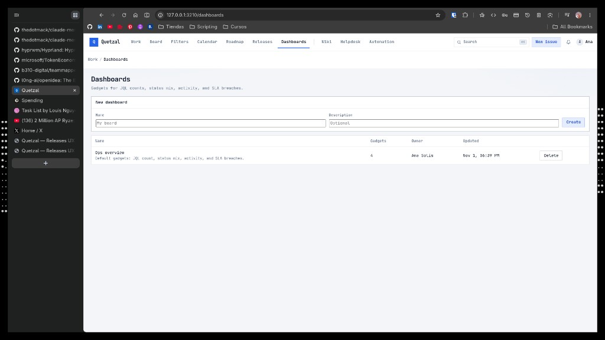

QUETZAL-UX-DASHBOARDS-6 · 6 design directions for /dashboards · covers sprint, personal, project scopes · pick a letter to implement
Sprint scopePersonal scopeProject scopeSample data: OPS project · Sprint 14 · Ana Solis (admin), Luis Mora, Diego Rivas
A
Jira-like Gadget Grid + Add drawer
Project2-column gadget grid with a right-side Add-gadget drawer; iteration of today’s UI, zero model changes.
Problem it solves
Today’s page is a bare Name / Description / Create form sitting above a flat table of dashboards. Even on the detail page, adding a gadget requires scrolling to a 6-field form with a JQL textbox. Direction A keeps the existing 4 gadget types (jql_count, status_breakdown, recent_activity, sla_breached) but surfaces them as a real gadget grid with an always-visible + Add gadget drawer — a familiar Jira pattern.
Tradeoffs
Not opinionated about scope — just a canvas. Fixed 2-column grid wastes space on wide screens vs E’s true mosaic. Drawer occupies ~280px right rail which may feel heavy for 1-gadget boards. Minimal invention: no new backend model, so cheap to ship — but also no new superpowers.
PopulatedCreate / Empty
Ops overview4 gadgets · Ana Solis · updated 2 min ago
Open bugs — Payments· JQL count⋮⋮
7+2 this week
project = OPS AND type = bug AND status != done AND component = Payments
Pick a gadget from the right drawer. You can rearrange them later.
B
Sprint Health Desk
SprintOpinionated dashboard pinned to the active sprint: burndown, commitment, blockers, remaining points — one answer to “how is Sprint 14 doing?”.
Problem it solves
Current /dashboards gives you four generic gadgets — none of which answer the question every scrum team asks on standup: is this sprint on track? You’d have to hand-craft a JQL count for commitment, a status breakdown for progress, and still miss blockers. Direction B is a scope-locked dashboard template: pick a sprint, get burndown + commitment delta + blockers + capacity in one scroll.
Tradeoffs
Needs a new gadget type (burndown) and the model must track sprint start/end + daily remaining points (we only have sprint state today). Useless outside sprint cadence — Kanban teams get nothing from this. Doesn’t replace A: this is a flavor you pick from D’s template gallery, not the universal canvas.
PopulatedMid-sprint snapshot
OPS · Sprint 14 · HealthDay 4 of 10 · Nov 1
Sprint 14“Stop duplicate charges and ship the retry path.”6 days leftEnds Nov 7
Commitment
18 pts
4 stories · 1 bug · 1 task
Completed
5 pts
28% done · 2 issues
Remaining
13
target 11 by day 4
Scope added
+2
OPS-5 added Oct 30
Blockers
1
OPS-4 (highest)
Burndown — remaining points by day
20151050
Mon 10/27Tue 28Wed 29Thu 30Fri 31Sat 11/1Fri 11/7
IdealActualScope change■ Today
Points committed vs delivered
5 / 18· 28%
Issues done vs total
2 / 6· 33%
Blockers & at-risk
OPS-4Duplicate charge on timeout — highestDiego · 2d idle
OPS-2Retry a failed capture — waiting on gateway sandboxLuis · 1d idle
OPS-5Refund confirmation email — unassigned— · added Oct 30
By assignee
Ana SolisOPS-3, OPS-6 (both done)2 / 2
Luis MoraOPS-2 (ip)0 / 1
Diego RivasOPS-4 (blocked)0 / 1
UnassignedOPS-50 / 1
C
Personal Home
Personal“Ana’s day” — my open work, due soon, mentions, focus block, streak. The first thing you see after login, not a tool.
Problem it solves
Today, dashboards are objects you build. There is no first-person “where should I pick up?” surface — users land on / or /issues and scroll. Direction C treats the personal dashboard as the default landing page: a single Focus block CTA (your most-stale ip issue), lists of your open work & due soon, your mentions, and a tiny streak heatmap. Zero config — it just renders.
Tradeoffs
A dashboard that cannot be customised feels less like a dashboard and more like a landing page — that may be the point, but it conflicts with “gadgets”. Requires a notion of mentions (not fully modelled today) and a focus-block affordance (new UX). Doesn’t help managers who need team-level visibility.
Populated — Ana Solis logged inSun Nov 1 · 10:20
A
Good evening, Ana
5 open · 2 due this week · 1 mention · 1 blocker on your plate
Sprint 14 — day 4 13 pts remaining
Focus block · suggested
OPS-3 Store the idempotency key
In review · 3 pts · idle 1d · the only thing blocking OPS-2 from merging
HD-12To doReply: how do I close the drawer manually?SLA 4h—
Due soon · next 7 days2 items
OPS-1Epic1.0 ship-ready scope locktoday—
OPS-S14SprintSprint 14 close + retroFri Nov 7—
@Mentions1 unread
D
Diegoon OPS-4
“@Ana reproduced on staging gateway with 30s delay — second POST creates a new charge.”
13:08
L
Luison OPS-2
“@Ana retry only when gateway returns timeout — never on decline, right?”
11:40
D
Diegoin ENG · how-we-ship
“@Ana added you as reviewer on the retry runbook.”
Fri
TodaySun Nov 1
10:00Focus · OPS-3 (45 min)
nowReviewing dashboard concepts
13:001:1 with Luis (30 min)
15:001.0 ship review
17:00Focus · OPS-1 scope lock
Streak · last 14 days8 / 14 active
3 commits · 2 reviews · 1 ticket closed today
D
Template Gallery · Create flow
SprintPersonalProjectReplace the one-line New dashboard form with a 2-step template gallery: pick Sprint / Personal / Project / Blank, then name + scope.
Problem it solves
Today, Create is a name + description form that produces an empty board — every single user has to re-invent the same four gadgets. Direction D nests a template picker in the create flow: four pre-wired templates (Sprint Health, Personal Home, Project Overview, Blank) that pre-populate the right gadgets scoped correctly. First-time users land on populated boards; power users still get Blank.
Tradeoffs
Requires a template model (gadget set + scope + default filters bound to a template key). The 3-card gallery takes vertical space — the current one-line form is unbeatable for terseness. Templates can rot: a “Sprint Health” that stays stale forever is worse than no template.
Create flow — step 1 pickerStep 2 name & scopeIndex page empty state
1. Pick a template2. Name & scope3. Done
New dashboard
Start from a template or build from scratch. You can edit everything after.
Sprint
Burndown
13pts left
Blockers · 1
By assignee
Sprint
Sprint Health
Burndown, commitment vs delivered, blockers, assignee rollup — pinned to one sprint.
Your open work, due soon, mentions, and a focus-block CTA — bound to you, not a project.
Includes: my work · due 7d · mentions · focus block · streak
Project
Status mix
6open
Activity · 5 events
SLA · 3 breached
Project
Project Overview
Status mix, open bugs, SLA breaches, recent activity — pre-scoped to one project.
Includes: status breakdown · open bugs JQL · activity · SLA
+
Blank
Start blank
An empty canvas. You pick every gadget. The current behaviour.
Ops overview · 4 gadgets · Ana
Sprint 14 health · 5 gadgets · Ana
Diego's helpdesk · 3 gadgets · Diego
Clone
Clone an existing dashboard
Fork someone else’s board — keeps the gadgets, drops the owner.
Create flowDashboards index · empty state
DashboardsYou don’t own any yet — pick a template to start.
Burndown
Sprint
Sprint Health →
My open · 5
Due soon · 2
Mentions · 1
Personal
Personal Home →
Status mix · 6
Project
Project Overview →
E
Mosaic KPI Wall · drag-resize
ProjectFreeform 12-column mosaic — big-number KPIs, sparklines, mini bars. Drag corners to resize. Executive wall vibe.
Problem it solves
A’s 2-column grid is forgiving but boring — every gadget has the same visual weight. For stakeholder-facing dashboards (ship review, exec read-out), one gadget — like “days to 1.0” — should scream and the rest should whisper. Direction E is a 12-col row-based mosaic with explicit size handles, big-number tiles with sparklines, and a visible edit mode so resizing is discoverable without hover tooltips.
Tradeoffs
A true drag-resize layout needs grid-position persistence (x, y, w, h per gadget) that today’s position int doesn’t support — the migration is the real cost. Mosaics look great in screenshots and get messy fast — expect regret from first-time editors. Sparklines need historical data most gadgets don’t store yet.
Edit mode · Ana resizingView mode (handles hidden)
Edit mode— drag tiles by their header, resize from bottom-right corner. Grid snaps to 12 cols.
Days to 1.0
0
target Sun Nov 1 · ships today
Open bugs · OPS
7
+2 wk / +0 today
Sprint 14 · pts left
13
of 18 committed
SLA breach
3
Issue status · OPS (last 30d, weekly)
Done IP Review To do
Top blocker
OPS-4 Duplicate charge on timeout
Diego · idle 2d · highest
Capacity · Sprint 14
Ana
5
Luis
5
Diego
5
Unass.
3
Live activity · OPS
OPS-3Luis → In review14:22
OPS-4Diego commented · reproduced staging13:08
OPS-2Ana set assignee → Luis11:40
OPS-6Ana marked DoneOct 31
OPS-1Ana linked 1.0 versionOct 31
OPS-5Ana added to Sprint 14Oct 30
Deploy freq · wk
2.3
+0.4 vs last 4w
Lead-time median
14d
−3d vs last 4w
F
Sidebar switcher + live preview
PersonalProjectLinear/Notion-style left sidebar of all dashboards with pinned/shared sections — right pane renders the selected board live. No index page.
Problem it solves
Today, /dashboards is a list and /dashboards/[id] is a detail page — switching costs a round-trip and loses context. For users with 3+ boards (release manager, team lead), that friction is real. Direction F folds both into one surface: left rail enumerates all accessible boards (grouped by Pinned → Mine → Shared), right pane renders instantly. Mirrors Linear’s views and Notion’s sidebar — patterns our audience already knows.
Tradeoffs
Breaks URL semantics mildly — /dashboards no longer has a “no selection” state. Needs a pinned boolean on dashboards (small schema change) and a shared with relation if we want the Shared section honest. 240px rail eats horizontal real-estate for small screens; collapses to a top drawer below ~900px. Index-free design: new users see an empty right pane the first time, which is a UX risk — needs a strong empty state (shown).
Populated · Ops overview selectedEmpty state (first-time user)
POps overviewAna · 4 gadgets · updated 2 min ago · 2 viewers now
Open bugs — Payments· JQL count
7+2 this week
project = OPS AND type = bug AND status != done AND component = Payments
Status mix — OPS· Status breakdown
To do
2
IP
1
Review
1
Done
2
SLA breaches· SLA
3
HD-14BreachedRegister freezes on refund
HD-21BreachedDuplicate charge Nov 1
Activity· Recent activity
OPS-3Luis moved to In review14:22
OPS-4Diego commented: reproduced on staging13:08
OPS-2Ana set assignee → Luis11:40
PopulatedEmpty · first-time user
▦ ▧ ▦
No dashboard open
Pick one from the left, or start a new board from a template. You can also open Diego · Helpdesk SLA that was shared with you.
Comparison — A through F
Concept
Scopes
Create flow
Gadget model
Schema cost
Best for
Risk / gap
A — Jira Gadget Grid
Project
Unchanged name + description, now with “Add gadget” drawer
Current 4 types, 2-col grid
None
Ship immediately; iteration of today’s UI with better affordance
Easy to make ugly; sparklines need historical data we don’t store
F — Sidebar + Preview
Personal · Project
+ button in rail → inline modal (any of D’s templates)
Reuses A/B/C body — F is a shell, not a gadget set
Low — pinned + shared_with
Users with 3+ boards; mirrors Linear/Notion muscle memory
Breaks list-detail URL semantics; empty right pane for new users
Which letter should we implement?
These compose into layers rather than compete. Minimal viable path: D (templates) on top ofA (grid) ships almost immediately with no DB migration — users get Sprint / Personal / Project pre-populated boards, A keeps running underneath. Layer F next for multi-board power users, and B/C/E can be template bodies that D creates. Pick a primary letter — or the A + D combo as the shippable v1.
ABCDEF
Suggested combo: A + D as v1 (ship this sprint), F as v2 (next sprint), B/C/E as template bodies behind D.
Reference — Current /dashboards
Screenshot of the live /dashboards page these concepts aim to improve: bare Name / Description / Create form on top of a flat table.

(Screenshot not found — see attached image in ticket)